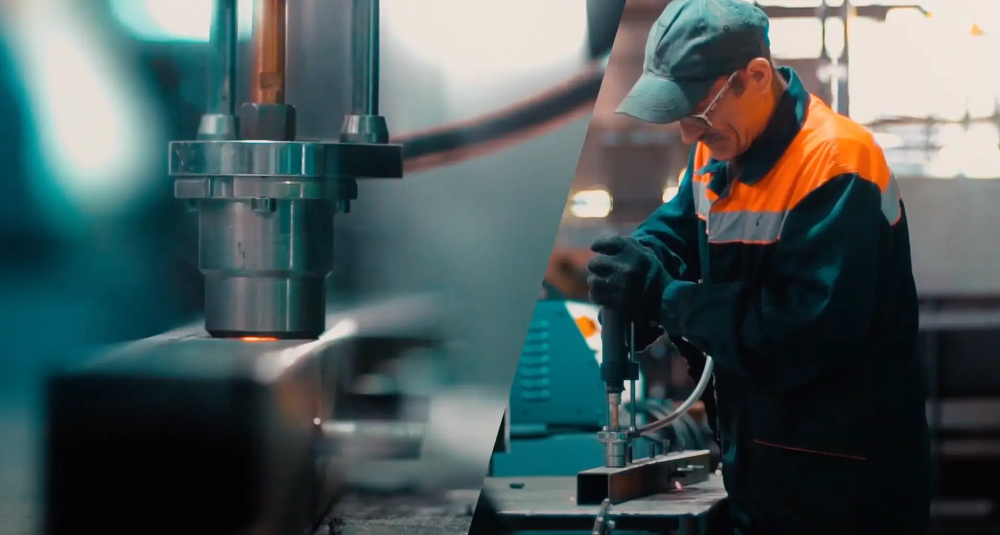

Главная / Производство
Полный цикл на одной площадке: от трёхмерной модели до приёмо-сдаточных испытаний. Ниже — этапы, методы формования и таблица, по которой можно подобрать технологию под свою задачу.
Между этапами изделие не покидает предприятие — подрядчиков на промежуточных стадиях нет.
3D-модель изделия и оснастки, анализ технологичности, расчёт схемы выкладки слоёв, подбор связующего.
Мастер-модели на станках ЧПУ 3 и 5 координат. Оснастка из стеклопластика, металла и композитов.
Открытые и закрытые методы: выкладка, напыление, намотка, RTM, инфузия, сэндвич-панели.
Резка, гибка и сварка металла, закладные элементы, рамы и каркасы под композитный корпус.
Электромонтаж, сборка узлов композит + металл + стекло, финишная окраска в покрасочных камерах.
Входной контроль материалов, пооперационный контроль, выходной контроль, приёмо-сдаточные испытания.
Если вы уже понимаете, что нужно — найдите строку. Если нет, позвоните: подберём вместе.
| Код | Метод | Когда применять | Ограничение | Поверхность |
|---|---|---|---|---|
| M-01 | Ручная выкладка | Крупная деталь, малая серия, недорогая оснастка | Качество зависит от квалификации рабочего | Одна глянцевая |
| M-02 | Напыление | Быстрое нанесение, простая геометрия | Короткие волокна, избыток смолы | Одна глянцевая |
| M-03 | Намотка | Трубы, резервуары, тела вращения | Ограниченная номенклатура, дорогая оправка | Внутренняя |
| M-04 | Инжекция RTM | Серия, повторяемость, минимум пустот | Дорогая и сложная оснастка | Обе глянцевые |
| M-05 | Вакуумная инфузия | Высокие физмех-характеристики, крупные детали | Нужен термошкаф или автоклав | Одна глянцевая |
| M-06 | Сэндвич-панели, VARTM | Плоские панели с заполнителем, упрощённая оснастка | Перепад давления до 0,095 МПа | Обе |
Стеклоармирующий материал вручную пропитывается смолой при помощи кисти или валиков. Пропитанный стекломат укладывается в форму и прикатывается валиками — чтобы удалить из ламината воздушные включения и равномерно распределить смолу по объёму. Отверждение происходит при комнатной температуре, после чего изделие извлекается из формы и подвергается механической обработке: обрезка облоя, высверливание отверстий.
Стеклонить подаётся в ножи пистолета, где рубится на короткие волокна. Затем в воздухе они смешиваются со струёй смолы и катализатора и наносятся на форму. После нанесения рубленый ровинг прикатывают, чтобы удалить воздушные включения. Прикатанный материал оставляют отвердевать при обычных атмосферных условиях.
Используется прежде всего для изготовления пустотелых круглых или овальных секционных компонентов — труб и резервуаров. Волокна пропускаются через ванну со смолой, затем через натяжные валики, которые натягивают волокно и удаляют излишки смолы. Волокна наматываются на сердечник нужного сечения; угол намотки контролируется отношением скорости движения тележки к скорости вращения.
Стеклоармирующий материал укладывается на матрицу в виде заранее заготовленных выкроек. Затем укладывается пуансон и прижимается к матрице прижимами. Смола подаётся в полость формы под рассчитанным давлением; иногда для облегчения прохода смолы внутри формы создаётся вакуум. Как только смола пропитала весь стекломатериал, инжекцию останавливают и ламинат оставляют в форме до полного отверждения — при обычной или повышенной температуре.
Сухие ткани выкладываются вместе со слоями полутвёрдой плёнки из смолы. Весь пакет закрывается специальной плёнкой. Сначала между плёнкой и формой создаётся вакуум, после чего форму помещают в термошкаф или автоклав. Под воздействием температуры смола переходит в текучее состояние и благодаря вакууму пропитывает материал, после чего полимеризуется.
Материалы: только эпоксидная смола; волокна любые; наполнители почти все, хотя ПВХ-пена требует специальной обработки из-за высоких температур процесса.
Метод часто используется для изготовления монолитных подкреплённых и трёхслойных панелей с сотовым или иным заполнителем. Для пропитки сухого наполнителя используется только разрежение, создаваемое в полости оснастки: под действием перепада давления между полостью и источником связующее движется к точке подсоединения вакуумного насоса, пропитывая наполнитель.
Перепад давления не превышает 0,095 МПа, что снижает требования к жёсткости оснастки. Поэтому возможна упрощённая оснастка: жёсткая половина с формообразующей поверхностью и верхняя гибкая мембрана, герметично закреплённая на жёсткой части.

Почти в каждом изделии есть металлический каркас, закладные элементы, электрика и стекло. Мы режем, гнём и варим металл, ставим закладные, выполняем электромонтаж и собираем узел целиком, а затем красим в покрасочных камерах.
Контроль идёт в три ступени: входной контроль материалов и комплектующих, пооперационный контроль на каждой стадии и выходной контроль с приёмо-сдаточными испытаниями.
Это нормально — обычно заказчик приходит с задачей, а не с технологией. Опишите изделие, тираж и условия эксплуатации, остальное подберём сами.